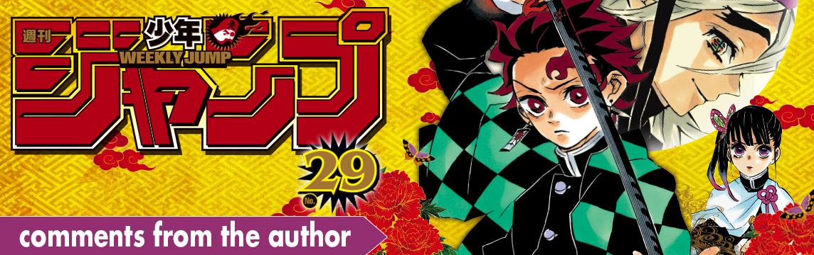
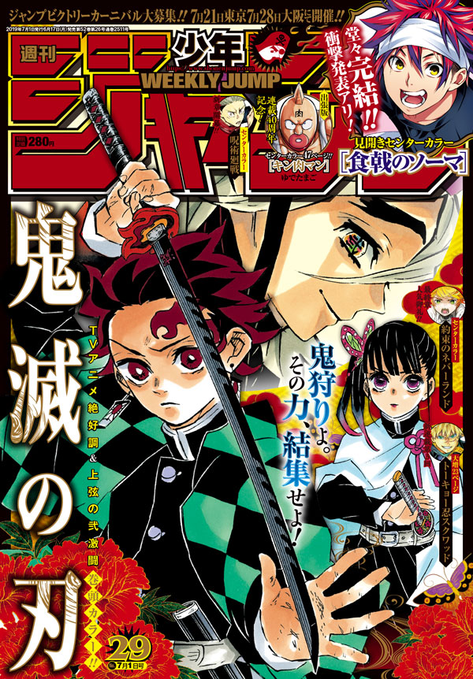

This week's weekly ShonenJump posting order & comments from the author.

Samurai 8: The Tale of Hachimaru
Una nueva obra Kabuki de Naruto será interpretada en Minamiza en Kyoto. Por favor echadle un vistazo!
Chainsaw Man

Las sandías son cada vez más baratas conforme se acerca el verano. Bien!
ACT-AGE

Sin importar cuando salga de casa, siempre lo paso mal eligiendo que vestir según la temperatura. No entiendo las estaciones.
Black Clover

Enhorabuena a Shokugeki no Sōma por este gran recorrido! Era un rival al que estaba siempre persiguiendo. Estaré aguardando su regreso!
The Promised Neverland

Hay un montón de platos y personajes que me encantan. Enhorabuena a los tres creadores por los seis años y medio de este genial manga!
Tokyo Shinobi Squad

Muchas películas anime se estrenan este verano! Pondré a prueba mi habilidad de planificación.
Haikyu!!

Ahh... Shokugeki no Sōma finalmente ha acabado. Enhorabuena! Vayamos a beber más veces, Tsukuda Sensei!
Jujutsu Kaisen

La semana pasada dibuje parte del hombro de Eso que ya había sido destrozado... No pasa nada!
Double Taisei

YouTube University de Atsuhiko Nakata es entretenido, de hecho es genial! Acchan es muy guay!
My Hero Academia

Tsukuda-san, Saeki Sensei, enhorabuena! Vamos a estar tristes sin vosotros. Tengo ganas de ver el capítulo final!
Food Wars!: Shokugeki no Soma

Soy tan feliz de haber podido caminar junto a Soma y a todos durante 315 capítulos. Gracias a todos los que nos han apoyado!
eh

Gracias por la cuarta temporada del anime! Y únete a nosotros en Jump GIGA!
Dr. STONE

Hice esa cosa que se ve en el capítulo en mi cocina. Era maloliente y asquerosa!
Beast Children

Últimamente lo paso bien escuchando un programa de radio llamado Yorunight x Yorunight de Washizaki Takeshi. Siempre lo escucho mientras dibujo manga.
We Never Learn

Saeki sensei, Tsukuda Sensei, enhorabuena! Vayamos a comer juntos de nuevo!
Hinomaru Sumo

Hace poco volví a ver lucha libre profesional y el torneo de los Mejores Super Juniors fue genial!
Yuragi-sou no Yuuna-san
Señor Tsukuda, señor Saeki, ha sido una serialización muy larga que me inspiró a reforzar mi trabajo. Muchas gracias.
The Last Saiyuki

Salieron las figuras de los bichos del texto sobre medicina del siglo 16 Harikikigaki. Quiero la de Yo no Kameshaku!
Yui Kamio Lets Loose

Cuando me bloqueo, normalmente leo la autobiografía de Yudetamago para conseguir motivación. Enhorabuena por los 40 años!
Demon Slayer: Kimetsu no Yaiba
Koyoharu Gotouge
Cuando estornudas y tienes hipo a la vez es increíble. Realmente increíble...